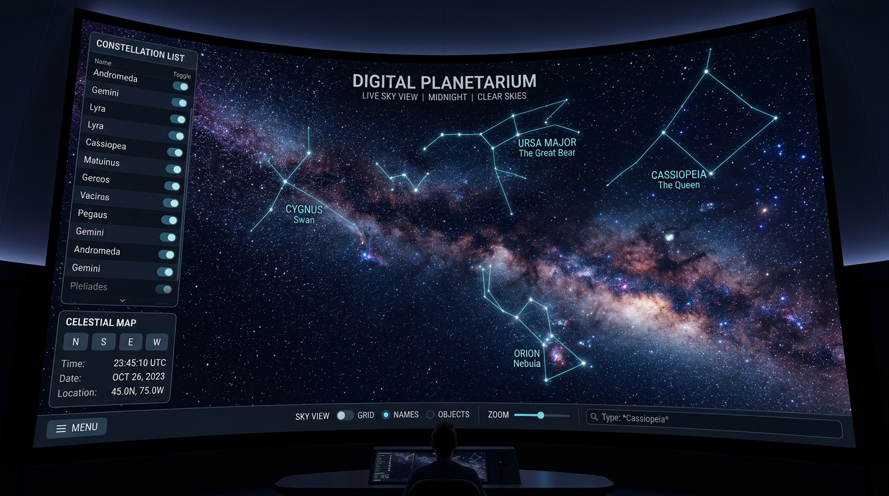
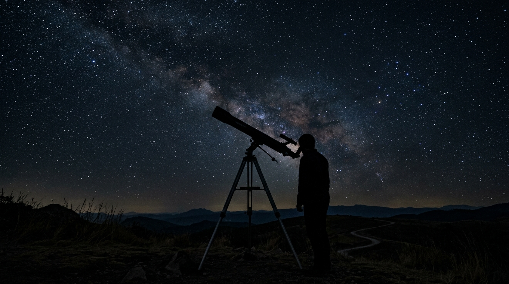
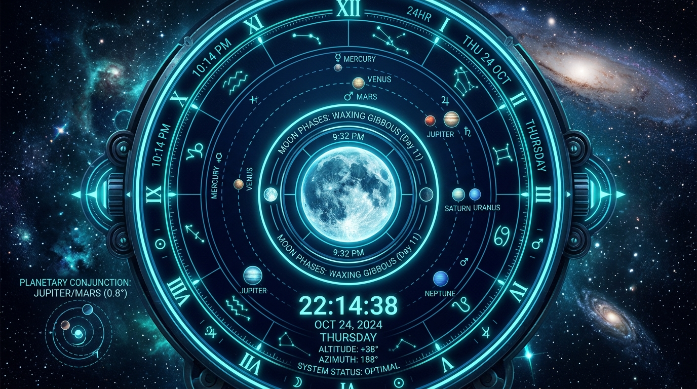
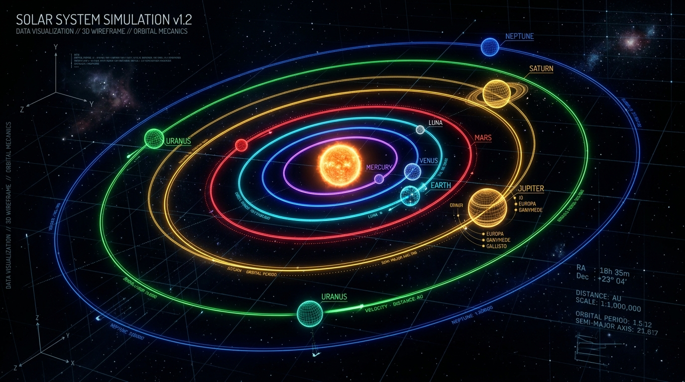
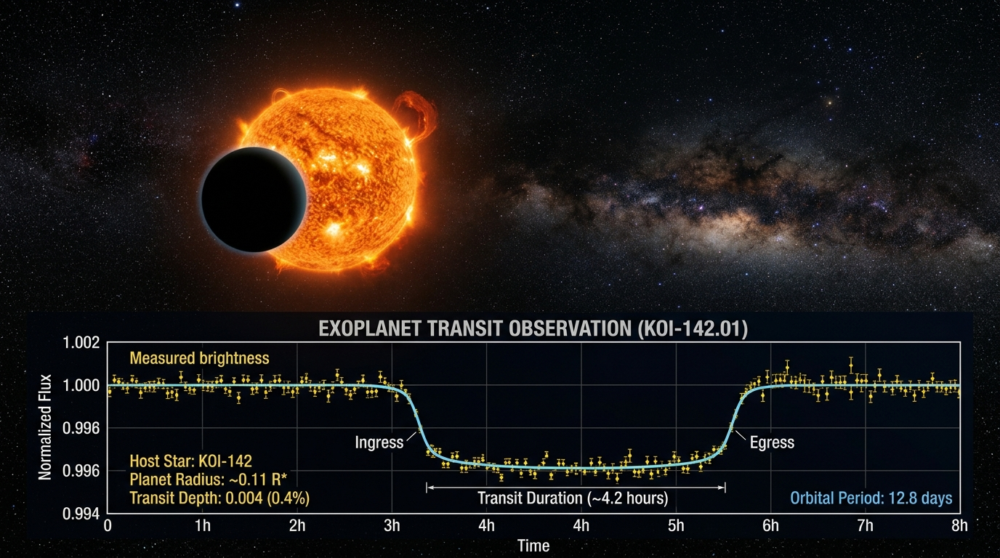
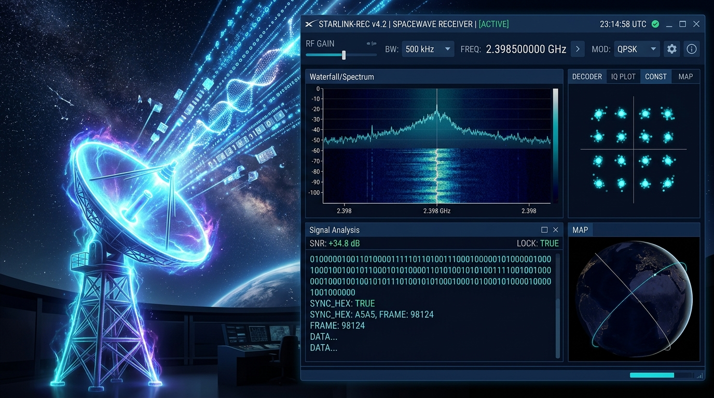

Resources
A curated collection of tools, databases, and reading materials for ASTRA members to explore the universe.
The "Getting Started" Hub
Perfect for freshers who have zero experience but want to look up at the night sky.

The absolute gold standard for planetarium software. It runs right in the browser and shows exactly what the sky looks like from Surat at any given time.

A fantastic collection of articles by Sky & Telescope on how to start observing, read a star chart, and use binoculars before buying a telescope.

The most reliable tool for checking moon phases, planetary rise/set times, and upcoming eclipses tailored to your exact location.
NASA's Astronomy Picture of the Day. A daily dose of space inspiration. Highly recommended for the entire club to follow.
Space Data & Software Tools
Geared toward the Tech, Software, and Satellite departments to get their hands dirty with real data.
The core Python library for astronomy. If anyone in the Space Data & Software wing wants to code, this is where they start. Handles coordinates, FITS files, and cosmology.

A highly accurate database that generates orbital data (ephemerides) for planets, moons, comets, and asteroids. Perfect for coding orbital mechanics simulations.
The definitive source for tracking satellites in Earth's orbit. Essential for the Satellite & Communication department to get TLE (Two-Line Element) data.

The official database of all confirmed exoplanets and Kepler/TESS data. Great for data science students who want to analyze light curves and transit data.

The holy grail for cheap, software-defined radio. This will teach your hardware wing how to pick up weather satellite images directly from space using a simple USB dongle.